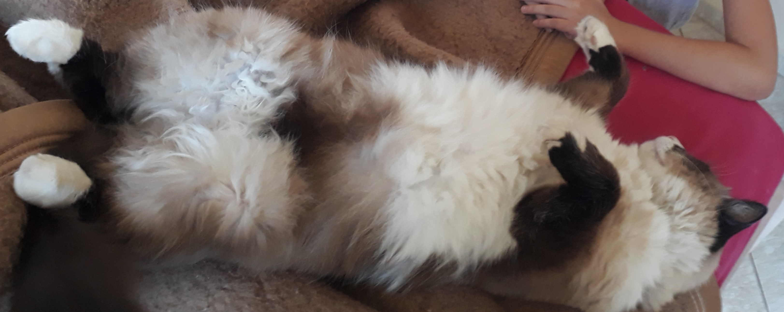

Olá, eu sou a Erin!
Olá! Meu nome é Erin, mais conhecida como Erinzínea (ou Ovelha, pela minha mamãe), tenho 7 anos e toda semana eu vou te explicar sobre assuntos interessantes para crianças!

O que gosto de fazer?
Estou no segndo ano do ensino fundamental 1, sou muito curiosa e gosto de ler, por isso, sempre pesquiso na internet, nos livros e também faço experiências para sempre aprender mais. Atualmente, além de estudar, também faço curso de Programação de Games no Scratch e faço parte do projeto International Astronomical Search Collaboration (IASC), que é um projeto gratuito da NASA onde procuramos por asteróides através da análise de imagens.
Também gosto muuuuuito dos animais. Tenho um gato Sem Raça Definida (vira-lata) chamado Mingau e pretendo ter mais animais, se a minha mãe deixar. Sou fã das historinhas da Turma da Mônica e adoro ler Gibis!
Não se preocupem! Na foto abaixo o meu "pequeno" gato só está dormindo rs
Sobre o quê vamos falar?
Semanalmente iremos falar sobre assuntos interessantes que também ajudarão no conhecimento das crianças como História, Geografia, Português, Inglês, Jogos, Programação, Animais, Curiosidades e muito mais!